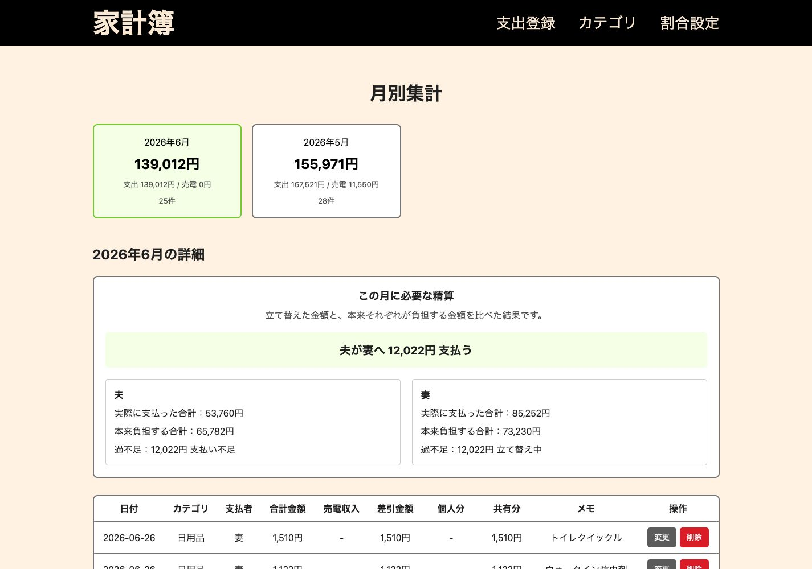
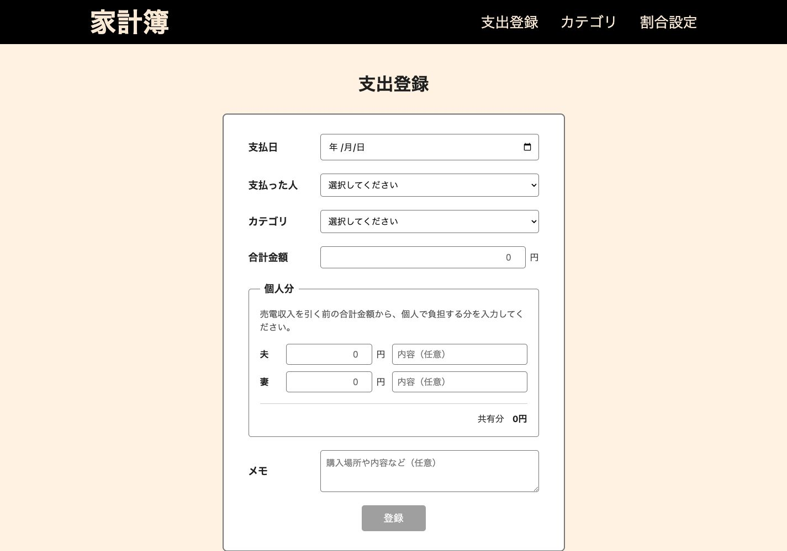
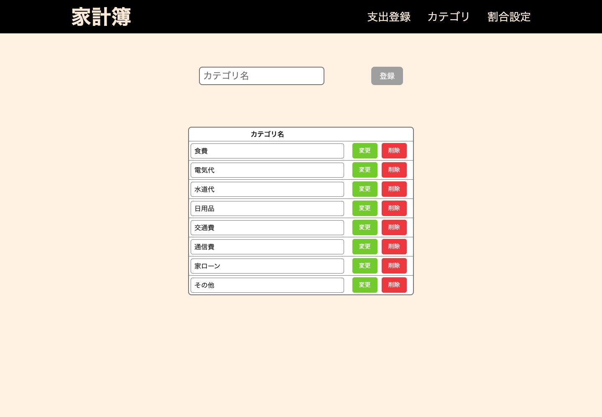
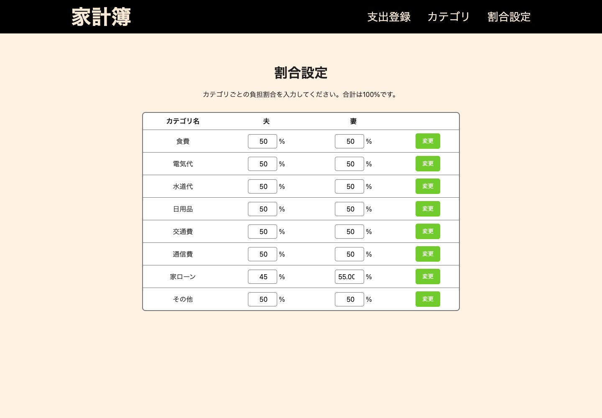

家計簿アプリ
about
アプリの概要
個人開発の家計簿アプリです。
日々の生活費の中で、食費と一括りにされつつも、その中には家族の誰かしか飲食しないものが含まれていたり、この費用は誰々、こっちは自分などと分けて計算するのが面倒だったり、それらを解決するアプリを自分で作ってしまおうと考えました。
具体的には、食費などの各カテゴリの支出登録をする際に、別ユーザーのものがあればその金額を登録することができ、家賃支払いを0.6：0.4の割合にしたいなどあれば、各カテゴリの計算割合を設定できるという仕様です。
月ごとの支出一覧と精算額を確認できるため、立て替えた金額を個別に計算する手間を減らせます。
環境構築はLaravel
Sailで行いました。その後のコーディングはcodexを使用、挙動をチェックして修正箇所を指摘する形で進めました。
pages
月別集計・支出一覧

支出・カテゴリ・割合設定



skills
- PHP
- Laravel
- JavaScript
- React
point
工夫した点
支出の合計だけではなく、個人で負担する金額と共有する金額を分けて登録できるようにしました。
また、カテゴリごとに夫婦の負担割合を設定し、実際に支払った金額と本来負担する金額から、月ごとの精算額を自動で確認できるようにしました。
苦労した点
いわゆるバイブコーディングというものを初めてやってみました。
指示を出せば簡単にAIがコードを書いてくれるものの、土台がしっかりしていないと意図しないコードを書いたり、DBを書き換えられたりなどがあるということを事前の情報として持っていたため、DBの設計には細心の注意を払いました。
今後改善したい点
支出をカテゴリ別に確認できるグラフや、月ごとの支出額を比較できる機能を追加したいと考えております。
また、自分で使ってみて良さそうであればスマホアプリとしてデプロイしたいと思っております。